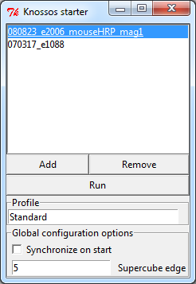

KNOSSOS QuickstartThis tutorial should give a very rough introduction and overview about KNOSSOS 4.0 and its features. KNOSSOS is a multiplatform (Win32, Linux, Mac) tool written in C++ (libraries: Qt, PythonQt, libCURL, openJPEG 2000, OpenGL, glut) to visualize large volume image data generated by Serial Blockface Scanning Electron Microscopy (SBFSEM). It provides the ability to overlay the image data with a user generated skeleton structure, representing the spatial structure and the connectivity of labeled neurons, and displays a three dimensional model of it.Start and Main Window of KNOSSOS



 Saving/Autosaving/Loading
|

| Shortcut | Action |
|---|---|
| CTRL + O | Load skeleton from file |
| CTRL + S | Save skeleton |
| CTRL + C | Copy current coordinates |
| CTRL + V | Paste coordinates |
| CTRL + H | Open this documentation |
| CTRL + Q (equal to ALT + F4) |
Close KNOSSOS |
| Shortcut | Action |
|---|---|
| C | Create a new tree |
| Z/SHIFT + Z | Move to next/previous tree (by tree ID) |
| X/SHIFT + X | Move to next/previous node (by node ID) |
| Shortcut | Action |
|---|---|
| S | Jump to active node |
| DEL | Delete active node |
| B | Mark active node as branch node |
| J | Jump to last branch node |
| SHIFT + left click on node | Mark clicked node as active node |
| ALT + left click on node (equal to SHIFT + mouse wheel click on node) |
Add/delete segment between clicked node and active node |
| Mouse wheel hold and drag on node | Move node to new position |
| A | Change to work mode "Add node" |
| W | Change to work mode "Link node" |
| N/P | Jump to next/previous comment node |
| F1 - F5 | Custom comment shortcuts |
| Shortcut | Action |
|---|---|
| Left/Right arrow key | Jump [Jump Frames] steps left/right in active viewport (Jump Frames can be defined at "Preferences">"Dataset Navigation") |
| SHIFT + Left/Right arrow key | Jump 10 steps left/right in active viewport |
| Up/Down arrow key | Jump [Jump Frames] steps up/down in active viewport |
| SHIFT + Up/Down arrow key | Jump 10 steps up/down in active viewport |
| F/D (equal to mouse wheel forward/backward) |
Jump [Jump Frames] steps forward/backward in active viewport (Jump Frames can be defined at "Preferences">"Dataset Navigation") |
| SHIFT + F/D | Jump 10 steps forward/backward in active viewport |
| R/E | Move [Walk Frames] steps forward/backward in active viewport (Walk Frames can be defined at "Preferences">"Dataset Navigation") |
| SHIFT + R/E | Move 10 steps forward/backward in active viewport |
| I/O in orthogonal viewports (equal to CTRL + mouse scroll) |
Zoom in and out of orthogonal viewports |
| CTRL + left mouse drag | drag viewport (restore original position by clicking on "reset viewports" in the tool bar) |
| 3 | Toggle viewport crosshairs |
Full Documentation
Contents
- 1 Preparing your Dataset
- 2 Knossos Starter
- 3 Knossos
- 3.1 Branch points [branchpoints]
- 3.2 Coordinates [enter coordinates, enter seedpoint, paste seedpoint, paste coordinates]
- 3.3 Edit Skeleton (menu)
- 3.4 Skeleton File (menu)
- 3.5 Help (menu)
- 3.6 Hot keys [Hotkey, Shortcuts, Short cuts]
- 3.7 All available shortcuts
- 3.8 Moving [scrolling, panning]
- 3.9 Nodes [skeleton nodes, skeleton points]
- 3.10 Preferences (menu)
- 3.11 Synchronization [synchronize Knossos]
- 3.12 Tools window
- 3.13 Trees [Skeleton]
- 3.14 Navigation (menu)
- 3.15 Viewport
- 3.16 Viewport Settings
- 3.17 Windows (menu)
Preparing your Dataset
MATLAB™ code that automates the following steps is available on the download page: http://www.knossostool.org/get.html.Datasets have to be in a cube format, that is, split into raw 8-bit binary files, 128 * 128 * 128 bytes = 2 MiB each. The file names have to be named like this, for example:
SomeName_x0000_y0032_z0020.raw
where you need to replace the x, y and z values with the
appropriate position of the cube. They are then placed in
a nested directory hierarchy. For the example above, the
file would have to go into a directory named
YourData\x0000\y0032\z0020\
Then, you can use the configknossos.pyw python script that
is in the tools\ folder in your knossos install directory
to generate the knossos.conf configuration file. A file
called knossos.conf has to be generated and placed in the
YourData\ directory, and should look like this:
experiment name "YourData";
boundary x 10000;
boundary y 10000;
boundary z 10000;
scale x 20.0;
scale y 20.0;
scale z 20.0;
magnification 1;
Where the boundaries are the edge length of your volume in
voxels and the scales are the size of your voxels in
nanometers. Set magnification to 1 unless you have
multiple downscaled versions of the same dataset that you
want to work with simultaneously.
boundary x 10000;
boundary y 10000;
boundary z 10000;
scale x 20.0;
scale y 20.0;
scale z 20.0;
magnification 1;
Knossos Starter
When starting Knossos, you are asked in the Knossos Starter window to select a dataset, give a profile name and choose a value for Supercube edge, before you run Knossos.
Add Dataset
- You can add a new dataset by clicking on the
"+"-Button.
- A window opens where you are asked to choose the dataset folder. Click on "Ok" after you selected the folder.
Profile
- You can put in your name below "Profile" to load
your Knossos profile (or to create it if the name has
not been used before).
- Knossos saves all your settings in Knossos under this name (assuming you close Knossos appropriately).
- You can reload them with this name the next time you start Knossos.
Remove Dataset
- If you want to remove a dataset from the Knossos starter menue, simply select it and click on the "-"-Button to remove it.
Select dataset
- In order to run Knossos you have to select a
dataset which will then be loaded.
- Select a dataset in the upper field (if you started Knossos for the first time or if your directories have changed, you first have to add a dataset) and then press the "Run"-Button to load Knossos with the selected dataset.
Supercube edge
- Here you can optionally choose how many cubes there will be loaded per viewport.
- The higher the number, the more cubes will be
loaded. However this will then require more memory.
- Change the Supercube Edge to 5 (requires 250 MB RAM) at each start. The setting 7 (686 MB RAM-Speicher) or 3 (54 MB RAM) is also possible, but 5 is optimal for tracing.
Synchronize on start
- Activate this check mark to directly synchronize Knossos at the beginning.
- You also need to activate this if you want to
synchronize two or more datasets on your own computer.
- In this way, two Knossos windows will open, each loaded with one dataset. Upon tracing, the skeleton (and everything else) will also be traced/done in the other Knossos window.
- To do this, activate the checkmark and choose afterwards two (or more) datasets by selecting them with your left mouse button while simultaneously holding down CTRL.
- To learn more about synchronization, see here.
Knossos
Branch points [branchpoints]
- Branch points help you to relocate important nodes
in your skeleton.
- Mainly this feature is used to find a location where the cell divides into two branches. Because you can only follow one branch, you have to find the other later on to trace it.
- Branch points are stacked. This means that new branch points will be stacked onto the old ones in the branch point file and when you jump to them you first come to the newer branch points and afterwards to the older ones.
Add branch point
- You can make a node a branch point by simply pressing B on your keyboard when the node is activated. The color of the node turns blue.
- Another possibility is to hold down CTRL while clicking with your right mouse button onto a new position. A node will be added which is simultaneously marked as branch point. This node does not automatically become active (in comparison to normal node placing)
Jump to branch point
- Press J on your keyboard to jump to the last made
branch point. The marking as a branch point is
automatically removed. If you want to keep it, press
again B on your keyboard.
- Another possibility is to click on Pop and (J)ump in the tools window. See Branch Point(tools window) for further information.
Remove branch point
- A branch point is removed at the time you jump to it.
Coordinates [enter coordinates, enter seedpoint, paste seedpoint, paste coordinates]
- In the upper left section of Knossos, you can enter the x-,y-,z-coordinates of a location you want to move to, e.g. to find the seedpoint of your tracing.
- Simply type in the coordinates each one in the corresponding coordinate field, or simply copy your coordinates from the excel file (separated by blanks, e.g. 100 100 100) and click on the Paste button left from the coordinate fields or press V on your keyboard while holding down CTRL.
Copy coordinates
- If you want to extract the coordinates of your current location, click on the Copy-Button left from the coordinate fields. The coordinates will be copied to your clipboard, separated with blanks.
Edit Skeleton (menu)
Work Mode
- Here you can choose between different types of placing a node.
Add node (a)
- This work mode does not connect the first node you place with any previously active node. Further placed nodes will be connected as usual. Pressing "a" on your keyboard will do the same.
Link with active node (w)
- This is the normal work mode, where each new placed node will be connected to the previously active node (and becomes the next active node).
Drop nodes
- This work mode simply places single nodes without connecting them. This is a special work mode which you do only need if you want to drop "node clouds" e.g. for glia cells.
Skeleton Statistics...
- This feature is not yet implemented.
Clear Skeleton
- This menu item will clear the whole cube from any skeleton you traced/loaded. You will be asked by a dialog if you really want to do this.
Skeleton File (menu)
Open... -> Open Skeleton File [open file]
- Under "Skeleton File" -> "Open..." a window opens where
you can choose a skeleton file from your computer to
be loaded into Knossos.
- Browse through your folders and choose a file. Then click on "OK"
Merge with Open Skeleton
- If you do not want the current skeleton to be
replaced by the one you are opening, choose Merge
in the appearing prompt.
- Note: The two skeletons will have the same tree IDs! If you want to give them again different IDs, see here.
Open recent Skeleton File (Recent File(s))
- This menu item will show you a list of recently loaded skeleton files (with the directory where they lie).
Save (CTRL+s) -> Save Skeleton File [save file]
- Here you can save your current skeletons on your computer. Pressing s on your keyboard while holding down CTRL will do the same.
Standard save folder (for skeleton files)
- If you haven't saved a file yet using Save As... the file will be stored in the skeletonFiles folder of your Knossos installation directory using as file name a combination of the date and time when you started Knossos to do tracing.
- If you have already stored a file in a specific folder and used a file name without ".000.nml" at the end, Knossos will save a new file in this folder using the previous file name and adding ".000.nml". If the file name already contains ".000.nml", Knossos will name the subsequent saved files ".001.nml", ".002.nml" and so on, given that you did not turn off the option Auto Increment Filename (for further information see Data Saving Options
Save As...
- To specify the file name and the folder for your
skeleton file, choose this menu item.
- A window will open where you can browse to the desired folder and save the file under the name given in the field Filename:.
Quit
- This menu item will quit Knossos.
Help (menu)
About
- This menu item opens a window containing some developer information about Knossos.
Documentation
- Here you can find this documentation
- When clicking on the question marks in the various widgets, corresponding parts of this documentation will open to give you a fast explanation of the widget.
Hot keys [Hotkey, Shortcuts, Short cuts]
- There are some key combinations which might help
you to be faster on Knossos:
- SHIFT + Arrow keys: Moves dataset 10 planes into the corresponding direction instead of 1. For faster scrolling.
- SHIFT + F / D: Moves dataset 10 planes forwards / backwards. For faster perpendicular scrolling.
- CTRL + S: Saves your skeleton in the same way as the autosaving feature does (auto increment number). See Save file.
- CTRL + V: If you have copied the coordinates into clipboard you can use this to quickly paste them into Knossos and jump to that location. See Paste coordinates.
- CTRL + mouse wheel: Zoom in and out of the three orthogonal viewports. In the skeleton viewport you don't need to hold CTRL
- SHIFT + mouse wheel: Changes the node radius of the active node. See Node Radius for further information.
- SHIFT + left mouse button click on node: Activate node
- CTRL + right mouse button click in slice viewport: Add a node which is simultaneously marked as a branchpoint (but does not become an active node).
- SHIFT + middle mouse button click on a node: Delete segment between the active and the clicked node. See Delete segment.
- CTRL + middle mouse button click on a node: Add segment between the active and the clicked node. See Connect nodes.
All available shortcuts
| Shortcut | Action |
|---|---|
| CTRL + O | Load skeleton from file |
| CTRL + S | Save skeleton |
| CTRL + C | Copy current coordinates |
| CTRL + V | Paste coordinates |
| CTRL + H | Open this documentation |
| CTRL + Q (equal to ALT + F4) |
Close KNOSSOS |
| Shortcut | Action |
|---|---|
| C | Create a new tree |
| Z/SHIFT + Z | Move to next/previous tree (by tree ID) |
| X/SHIFT + X | Move to next/previous node (by node ID) |
| Shortcut | Action |
|---|---|
| S | Jump to active node |
| DEL | Delete active node |
| B | Mark active node as branch node |
| J | Jump to last branch node |
| SHIFT + left click on node | Mark clicked node as active node |
| ALT + left click on node (equal to SHIFT + mouse wheel click on node) |
Add/delete segment between clicked node and active node |
| Mouse wheel hold and drag on node | Move node to new position |
| A | Change to work mode "Add node" |
| W | Change to work mode "Link node" |
| N/P | Jump to next/previous comment node |
| F1 - F5 | Custom comment shortcuts |
| Shortcut | Action |
|---|---|
| Left/Right arrow key | Jump [Jump Frames] steps left/right in active viewport (Jump Frames can be defined at "Preferences">"Dataset Navigation") |
| SHIFT + Left/Right arrow key | Jump 10 steps left/right in active viewport |
| Up/Down arrow key | Jump [Jump Frames] steps up/down in active viewport |
| SHIFT + Up/Down arrow key | Jump 10 steps up/down in active viewport |
| F/D (equal to mouse wheel forward/backward) |
Jump [Jump Frames] steps forward/backward in active viewport (Jump Frames can be defined at "Preferences">"Dataset Navigation") |
| SHIFT + F/D | Jump 10 steps forward/backward in active viewport |
| R/E | Move [Walk Frames] steps forward/backward in active viewport (Walk Frames can be defined at "Preferences">"Dataset Navigation") |
| SHIFT + R/E | Move 10 steps forward/backward in active viewport |
| I/O in orthogonal viewports (equal to CTRL + mouse scroll) |
Zoom in and out of orthogonal viewports |
| CTRL + left mouse drag | drag viewport (restore original position by clicking on "reset viewports" in the tool bar) |
| 3 | Toggle viewport crosshairs |
Moving [scrolling, panning]
- There are many ways in Knossos to move through the
dataset. They are listed here in priority order:
- You can use your left mouse button to either drag the dataset by clicking and pulling in one direction, or to recenter the view on the position you clicked (depending on the WorkMode you chose)
- Use the arrow keys on your keyboard to move into
the corresponding direction (depending on which
slice viewport your mouse cursor is currently
positioned).
- Using the arrow keys while holding down SHIFT will move 10 planes.
- Use your mouse wheels to move perpendicularly to the viewport where your mouse cursor is currently positioned.
- Using D and F on your keyboard will also move
the dataset perpendicularly [Jump Frames] planes,
[Jump Frames] can be defined under "Preferences" --> "Navigation Settings".
- Using F/D while holding down SHIFT will perpendicularly move 10 planes.
- Placing a node using your right mouse button will recenter the view on the node. (Adding one using CTRL + right mouse button won't do so).
- You can jump to the currently active node using S on your keyboard. See here for further information.
- By entering a coordinate in the upper left coordinate fields you can jump to a desired location. See here for further information.
- You can jump to a node previously marked as a branch point using J on your keyboard or using your Tools window.
- You can search for nodes with comments using N
and P on your keyboard or your Tools window.
- There you can also search for a specific comment by typing it into the field Search for.
Nodes [skeleton nodes, skeleton points]
Activate nodes [active node, reactivate nodes]
- The currently active node is highlighted by its node ID which is shown right near to the node.
- New placed nodes will be connected to the currently active node, given that the option Link with active node is enabled (default).
- Furthermore, several functions such as Delete node, Connect nodes/Make segment, Delete segment and Branchpoint are related to the currently active node.
- You activate a node by clicking on it with your
left mouse button while simultaneously having the
SHIFT key on your keyboard pressed.
- Another possibility is to choose the desired node ID in the tools window (see Tools Window).
Add nodes [place nodes]
- You place a node by clicking with the right mouse
button into one of the slice viewports.
- The first node of a skeleton is always marked blue and gets the comment "First Node" automatically.
- Furthermore, the program centers the viewport on the node you have just placed.
- Further nodes you place will be automatically connected with the previously placed (or activated) node, given that the option Link with active node is enabled (default).
Connect nodes [make segment]
- You can connect two nodes with each other by
activating one of the two nodes and clicking on the
other one with the middle mouse button while
simultaneously holding down the CTRL key on your
keyboard.
- This is helpful, e.g. if you separated two skeleton parts by accident and you want to connect them again.
- Another way is to activate one node, to enter the ID of the other node in the field right beside the button "Link Node with..." (in the Tools window, see Link node with) and afterwards clicking on the button "Link node with..." (see blue circles in next image)

Delete node [remove node]
- You can delete a node by activating it and pressing
DEL on your keyboard.
- Another way is to click on Delete node (Del) in the tools window under "Nodes" (see Delete Node)
Delete segment [remove segment]
- You can delete the connection (segment) between two
nodes by activating one of them and clicking on the
other with your middle mouse button while holding down
the SHIFT key on your keyboard.
- This is helpful if you want to separate two parts of your skeleton (to delete one of them or to make two trees according to Split Trees)
Move node [reposition node, drag node]
- If you want to move a node (e.g. to bring it to the center of the cell), simply click on the node with the middle mouse button and drag it to another position. The node does not have to be your active node.
Node ID
- The Node ID of each node is unique among all skeletons traced/loaded in the dataset. Each new added node gets a new ID, starting from 1. This enables you to relocate each node, e.g. by using the tools window (see Jump to node).
Preferences (menu)
Load Custom Preferences
- Here, you can load your previously saved custom GUI preferences. A window will open and you are asked for the location of the settings-file.
- Custom preferences contain your last used file and folder, the position of your windows, the size of Knossos, the look of your viewports etc.
Save Custom Preferences As
- Here, you can save your current custom GUI preferences. A window will open and you are asked where to save the settings-file containing your preferences.
- The settings-file contains your last used file and folder, the position of your windows, the size of Knossos, the look of your viewports etc.
Dataset Navigation
- This will open an additional window, where you can change settings about how fast to navigate through the stack.
- Movement Speed changes the speed of moving through the stack when using your arrow keys on the keyboard. The higher the value, the faster you are moving.
- Jump Frames represents the amount of planes which will be moved when pressing once on your arrow keys or D/F. For example, a value of 100 will jump 100 planes into the direction according to your arrow key.
- Remember, these two settings will only change the way of moving with your arrow keys and D/F.
- Recentering Time [ms] sets the time it takes for the viewport to move from the current center position to the position you chose with your left mouse button. Remember, this will only work if you chose "Recenter on Click" as your preferred work mode (see [1]).
Synchronization
- This will open a new window called Synchronization Settings:
- To learn more about synchronization, see here.
Synchronization Settings
- At the top of the window you see the connection status of Knossos (e.g. "No connection to server.").
- In the field Remote Host you can enter the ip adress of the host you want to connect to.
- In the field Remote Port you have to specify the port through which the connection should be initiated. Make sure your firewall does not block this port.
- The buttons Connect and Disconnect
will do what they say =) Use them to establish the
synchronization connection to the other computer.
- The other computer must also have Knossos opened and a connection established to the first computer.
Data Saving Options
- Here you can change the way of automatically saving your proceedings.
- Enabling the option Auto-Saving will save
your skeletons on a time interval according to the
field Saving Interval [min].
- By default your data will be saved automatically every 5 minutes. You can change this by typing in another positive value.
- The option Auto Increment Filename is enabled by default and will automatically increase the number "###.nml" in the filename at every saving step. Deactivating this will overwrite the saved files at every saving step.
Viewport Setting
- See chapter Viewport Settings.
Synchronization [synchronize Knossos]
- The Synchronization feature is mainly used, if you have same datasets but with different resolutions. Synchronization allows you to watch them simultaneously in multiple Knossos instances.
- There are two types of synchronization:
synchronization on the same computer or
synchronization on different computers using a network
connection.
- If you want to use this on the same computer,
use the Synchronize on start button
in the Knossos starter menu.
- You choose two or more datasets in the starter menu which will then all be loaded each in one Knossos instance. The instances will move and react simultaneously if you move or do tracing in one of them.
- Opening many Knossos instances will of course need high computing power and RAM. Thus the performance might go down.
- You can also synchronize (two!) computers over
network. They will also move and react
simultaneously.
- To do this start Knossos on both computers each with a different dataset. The Knossos starter menu has to stay opened in the background!
- In the preferences menu you then have to open the Synchronization Settings on both computers and enter in each case the IP adress and the open port of the other computer (port should be the same in both cases).
- Afterwards click on connect.
- If it does not work, make sure that the port is not blocked by the firewall of the computers.
- If you want to use this on the same computer,
use the Synchronize on start button
in the Knossos starter menu.
Tools window
- Under "Windows" --> "Tools" you can open an important, additional window with many features.
Quick
- In the Quick section, the most important functions of the other sections are summarized.
- Tree count counts the number of trees you have currently loaded/traced in the dataset, whereas Node count counts the overall number of nodes you have placed in the current dataset.
Active Tree ID
- This shows you the currently active tree ID. This is the three which is also highlighted in red in all viewports. You can switch to another tree by typing in or toggling to another ID. Using Z/SHIFT+Z will do the same.
Active Node ID
- This shows you the currently active node ID. You can switch to another node by typing in or toggling to another ID. Using X/SHIFT+X will do the same.
- Below that you see the coordinates of the currently active node.
Comments
- In the "Active Node ID" section you can also see
the comment of the currently active node.
- If you want to make a comment, just type it into the field Comment:. Comment nodes appear yellow, but if they are also branch nodes, they will be blue.
- If you want to search for a specific comment type it into the field Search for: and click on Find (N)ext or Find (P)revious. Pressing N or P on your keyboard will do the same.
- Note: The first node of a tree you begin to trace has always automatically the comment "First Node".
Branch Points
- Under Nodes on Stack you can see how many branchpoints there have been placed yet.
- Clicking on Push (B)ranch Node will transform the currently active node into a branchpoint. Pressing B on your keyboard will do the same.
- Clicking on Pop & (J)ump will lead you to the last placed branchpoint which simultaneously becomes again a normal node. Pressing J on your keyboard will do the same.
- Note: The first node of a tree you begin to trace is always automatically transformed into a branchpoint.
Trees
Active Tree ID
- This shows you the currently active tree ID. This is the tree which is also highlighted in red in all viewports. You can switch to another tree by typing in or toggling to another ID. Using Z/SHIFT+Z will do the same.
Delete Active Tree
- Clicking on Delete Active Tree will - suprisingly - delete the whole currently active tree.
New Tree (C)
- Clicking on New Tree (C) will make a new tree (with new tree ID) when placing the next node. Pressing C on your keyboard will do the same.
Merge Trees
- With the Merge Trees function you can give two trees the same ID. The ID you are typing into the field ID 1 is the ID which will be remained. The ID in field ID 2 will get the ID of the first field. After typing in both IDs click on Merge Trees
Split Trees By Connected Components
- Clicking on Split Last Component From Tree checks if the currently active tree consists of at least two separate components (i.e. one group of nodes is not connected with another group of nodes). If this is the case, then the last component will become a new tree with an individual (new) ID. For example, this feature can be used if you traced a very long branch and afterwards you recognize that this branch does not belong to your cell. It is easier to delete the first segment at the branchpoint, split the two trees with this function and delete the branch tree, than deleting every single node of the branch.
Nodes
- Node Count shows you the overall number of nodes you placed (independent of trees) in the current dataset.
Active Node ID
- This shows you the currently active node ID. You can switch to another node by typing in or toggling to another ID. Using X/SHIFT+X will do the same.
Jump to Node (S)
- This button will center the viewports on the currently active node. In this way you can enter a node ID in the field above and jump to it. Pressing S on your keyboard will do the same.
Delete node (Del)
- This button will delete the currently active node. Pressing Del on your keyboard will do the same.
Link node with (Shift+Click)
- This button will make a segment between the currently active node and the node ID you entered into the field on the right side of the button. Holding down CTRL while clicking with the middle mouse button on another node, will do the same.
Comment
- The comment function helps you to find specific
nodes again without the need of writing down the ID.
You can make a comment on a node and search for it
again later on.
- If you want to make a comment, just type it into the field Comment:.
- If you want to search for a specific comment type it into the field Search for: and click on Find (N)ext or Find (P)revious. Pressing N or P on your keyboard will do the same.
- Comment nodes appear in yellow. But if they are also branchnodes, they will be blue.
- Note: The first node of a tree you begin to trace has always automatically the comment "First Node".
Node Radius
- Here you can change the radius of the node. This is normally not necessary, except for Volume Tracing jobs.
- You can change the radius of the current node by either typing it into the field Active Node Radius(SHIFT+wheel) or by holding down the SHIFT key and scrolling the mouse wheel.
- You can change the default node radius (when new nodes are placed) by typing in another value in the field Default Node Radius or by clicking on Use Last Radius as Default to use the last entered radius.
Locking
- The Locking feature helps, if the task is to trace a cell only in a defined volume. Locking to a Node will prevent you from placing nodes outside the defined radius.
- You can set the desired locking radius in the field Locking Radius. The unit is in voxels ("planes").
- Clicking on Enable comment locking will activate the radius locking as soon as a node having the comment according to the text in the field below 'Lock to Nodes With Comment is searched using the comment search feature.
- Another possibility is to Lock to Active Node. By clicking on this button you are only able to place nodes in the defined radius around the currently active node.
- Clicking on Disable Locking will disable the Locking feature.
Trees [Skeleton]
Add tree [new tree, new skeleton]
- This feature helps you, if you have to trace more than one skeleton at the same time (e.g. tracing task "dense skeletonization").
- You can start with a new skeleton/tree by pressing
C on your keyboard. The next node you place will start
the new tree. This tree has also a new tree ID.
- There is also the possibilty to click on New Tree (C) in the tools window under "Trees" (see New Tree).
Delete tree [remove tree, delete skeleton]
- You can delete a whole tree by clicking on Delete
Active Tree in the tools window under "Trees"
(see Delete Active Tree).
- Warning: If two skeletons/trees have the same ID (if you did not separate them by Split Trees or if you did not make a new tree for the second skeleton) then both will be deleted!
Merge trees [merge skeletons]
- With the Merge Trees function you can give two trees the same ID.
- This can be done in the tools windows under "Trees". For further information Merge Trees.
Split trees [separate trees, split skeleton]
- There might be a case where you want to split a tree into two trees, e.g. if you traced a long branch and you recognize afterwards that it did not belong to your skeleton.
- To do this, you need to separate both trees by
deleting the node next to the branch point or by
deleting the first segment of the branch (see Delete
segment).
- Afterwards click on Split Trees By Connected Components in the tools window under "Trees" which gives you different IDs (and color) for the two skeletons (see Split Trees.
- Then you can delete the whole branch at once (see Delete skeleton).
Tree ID
- The tree ID of a skeleton is normally unique among all skeletons traced/loaded in the dataset. Each new added tree gets a new ID and color.
- To see the ID of the current active tree, see Active Tree ID
Navigation (menu)
Work Mode
- Here you can change the way of moving through the stacks with your left mouse button. Choose the one which is more pleasant to you.
Drag Dataset
- If you choose this option, you can move the stack by clicking (and holding) with your left mouse button on a slice viewport and dragging it into the desired direction.
Recenter on Click
- If you choose this option, you can move the stack with your mouse by clicking on a location in the slice viewports with your left mouse button. The view recenters on this point.
Dataset Statistics
- This feature is not yet implemented.
Viewport
- When Knossos opens, the data can be observed in four different viewports.
- The viewports show the black-white-grey volume image data. The dark area is the Extracellulary Matrix where an enzyme (HRP) is used to deposit heavy metal ions which cause high contrasts in electron microscopy based recordings. Hence, the bright area is intracellulary (intracellular organelles are not labeled here) and represents the neurons (or glia cells).
Viewport xy (red viewport)
- The upper left viewport (with a red border) shows the x-y-plane of the stack.
- By scrolling or using the D/F key you move into z-direction.
Viewport yz (blue viewport)
- The upper right viewport (with a blue border) shows the y-z-plane of the stack.
- By scrolling or using the D/F key you move into x-direction.
Viewport xz (green viewport)
- The lower left viewport (with a green border) shows the x-z-plane of the stack.
- By scrolling or using the D/F key you move into y-direction.
3D Viewport

- The lower right viewport (with a black border) represents the 3D viewport.
- The black borders represent the border of the dataset, on the edges you can see the voxel coordinates.
- With the 3D viewport you can observe the development of your traced skeleton(s).
- The three other viewports can be seen as 3 planes around the current viewports' center.
- By scrolling you move in and out of the dataset, with the left mouse button you can pan through the stack and with the right mouse button you rotate the stack.
Viewport Settings
- Under "Preferences" --> "Viewport Settings" you can try the following additional settings.
General

Skeleton Visualization
- The feature Light effects adds a virtual light source when rendering the skeleton. Hence, the skeleton looks more "3D". Choose the setting you like more.
- The feature Highlight Active Tree is helpful if you have loaded multiple skeletons at the same time, because the currently active one is highlighted in red.
- The feature Show All Node IDs shows every node ID in the stack (and also in the 3D-Viewport). Hence, the active node is worse recognizable but maybe you may get along better.
- The feature Override Node Radius changes all radii of the skeleton to the value in the field beside. This is useful at the most, if you want your volume tracing skeleton to be depicted as a point/line-skeleton.
- The feature Edge <-> Node radius ratio changes the ratio of the edge size to the node size. In that way, you can visualize the nodes bigger than the segments or vice versa.
Rendering Quality
- You can use this to adjust the quality of the rendered skeleton. A higher quality reduces speed and vice versa, where a value of 1 ensures best quality and a value of 20 yields fastest rendering.
Slice Plane Viewports
Skeleton Overlay
- The option Enable Overlay turns the skeleton rendering in the 3 slice plane viewports on (default) and off.
- If you enable Highlight Intersections then the points at the skeleton where it intersects one of the other slice planes will be highlighted in black.
- The value in Depth Cutoff sets how many planes before and after a skeleton you can already see it. The higher the value, the earlier the skeleton is shown in the viewports when approaching it.
Voxel Filtering
- Dataset Linear Filtering (enabled by default) turns on the the filtering of the slices. The image looks smoother when this option is enabled.
Color lookup table
- This feature enables you to change the grey values of the dataset and the default tree colors into color values according to a "Color Lookup Table" (LUT). The format of this table is the ImageJ-format, supporting only 768 byte tables (3 bytes RGB colors for each of the 256 grey values)
- To use this feature, first load an adequat lookup
table by clicking on Load.
A window will open where you are asked for the LUT-file.
- Then check on Use Own Dataset Colors or Use Own Tree Colors and the dataset or the trees should change their color according to the table.
Dataset Dynamic Range (Contrast)
- Here the intensity values (i.e. the contrast) of
the dataset can be adjusted. Because it is 8-bit
greyscale the range goes from 0 to 255.
- If you increase Bias (default 0), then the image gets brighter. If you decrease Range Delta, the image gets darker.
- A good setting is 100 for both Bias and Range Delta.
Viewport Objects
- Here you can toggle the display of the intersection crosshairs, which show you the intersections of the three slice plane viewports. The color of an intersecting line corresponds to the viewport border of the respective viewport, i.e red for XY, green for XZ and blue for YZ.
- You can also toggle the display of the size label in each slice plane viewport. The label shows you the size of the displayed dataset in μm.
Object ID Overlay
- This feature is used to stain parts of the EM dataset with other colors by using a second "object id"-dataset.
- However this feature is yet not fully implemented.
- Enable Color Overlay will enable this feature.
Skeleton Viewport

Skeleton Display Modes
- Under "Skeleton Viewport" in the "Viewport
Settings" you have the option to change the rendering
of the skeleotn in the 3D viewport.
- Whole Skeleton displays all loaded/traced skeletons at full length in the 3D viewport.
- Only Active Tree displays the complete tree of the skeleton which is currently active.
- Hide Skeleton (fast) does not render any skeleton in the 3D viewport. This option is recommended, if your skeletons become very large and your computer gets slower and slower. Switching the trees off significantly improves the performance.
3D View
- If Rotate Around Active Node is activated (default) then the rotation in the 3D viewport will be around the currently active node. Otherwise the view will rotate around the center of the dataset.
- You rotate in the skeleton viewport by dragging with the right mouse button or using the r90, r180 buttons in the skeleton viewport to rotate 90 or 180 degrees.
Windows (menu)
- Under "Windows" you can open the Tools window, Task Management, Comments, Zoom and Multiresolution Settings and the Tracing Time window.
Tools window
- See here for information about the Tools window
Comment Settings
- In the Comment Settings you can define comment shortcuts, customize the way comments are highlighted and search in a list of all comments in the skeleton.
Shortcuts
- Place comments on the F1 - F5 shortcuts. When pressing a comment shortcut, the currently active node will receive the corresponding comment.
- The shortcuts will be saved for you on closing KNOSSOS.
Highlighting
- Define in which way comments with certain substrings are highlighted.
- With the checkboxes "Enable cond. coloring" and "Enable cond. radius" you can toggle the usage of your highlighting definitions. Don't forget to check them if you want to use comment highlighting.
- In the text box enter the substring you would like to highlight. Then choose a color and a radius and all nodes with comments containing that substring will appear in the defined color and will have the defined radius.
- Note that if a comment matches several substrings, only the first substring will be considered. So place your most important substring into the first text box, the second most important into the second text box and so on.
Node Comments
- The "Node Comments" tab gives you a fast overview over all existing comment nodes. You can filter by branchnodes by checking the "Branch nodes only" checkbox and you can filter for a specific substring.
- By clicking on one table entry, the corresponding node will be activated and the view recenters on its position.
Tracing Time
- The Tracing Time window is an informative widget to show you your time spent on the loaded Skeleton.
- Running time shows how long this KNOSSOS session is running already.
- Tracing Time shows how much from that time you have been tracing.
- Idle Time shows how much of this time you have been idle, i.e. have done nothing.
Task Management
- Here you can manage your tracing tasks. Tracing tasks are skeleton files with a starting node and task information. Note that you need a network connection, as this feature connects to a task host.
- First you have to login at your task host with your username and password.
- On successful login, you will reach the task management widget which displays to you your current task if you have already activated one. If not, you can load one via Load New Task. The task file will be saved in a task-files folder. Please read the task category's description and the task's comment carefully.
- Now you can trace as usual. You can submit your work every now and then by clicking on Submit. If you check the final checkbox first, your submit will be marked as final, that is, as finished work.
- Through Load Last Submit you can load your latest submit to your task into KNOSSOS to continue tracing. If you haven't submitted anything, yet, the task file will be loaded instead.
- In the Description tab, you can reread the information for your task any time.
- You can logout to login as another user or to change the task host. If you do not logout, you will remain logged in as long as the session cookie is valid.
Zoom and Multiresolution
Zooming Slice Viewports
- You can zoom into a slice viewport by either pressing I on your keyboard or holding down CTRL and moving your mouse wheel forward.
- You can zoom out of a slice viewport by either pressing O on your keyboard or holding down CTRL and moving your mouse wheel backward.
- The mouse cursor has to be placed over one of the slice viewports
- Another possibility to zoom is to use the Zoom and Multiresolution Settings window.
- If you have a dataset with several magnifications, KNOSSOS will dynamically switch between these magnifications while zooming. You can prevent this by checking "Lock dataset to current mag".
Zooming 3D Viewport
- You can zoom in or out of the 3D viewport by moving your mouse wheel forward
or backward respectively.
- Another possibility to zoom is to use the
Zoom and Multiresolution Settings window.
Zoom and Multiresolution Settings window.